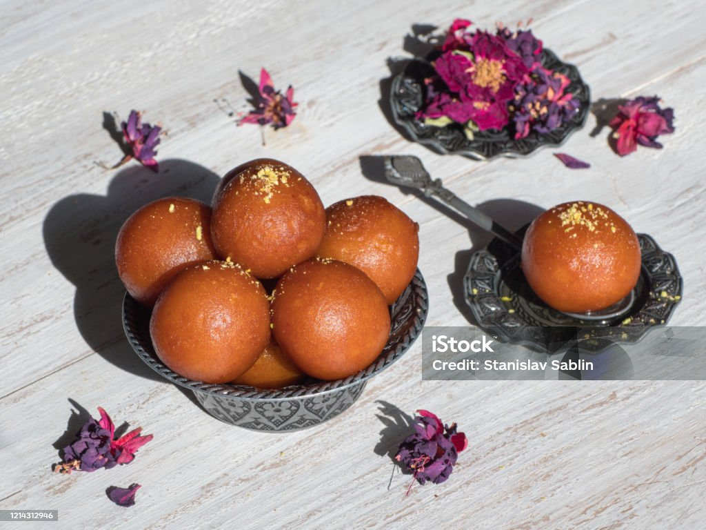
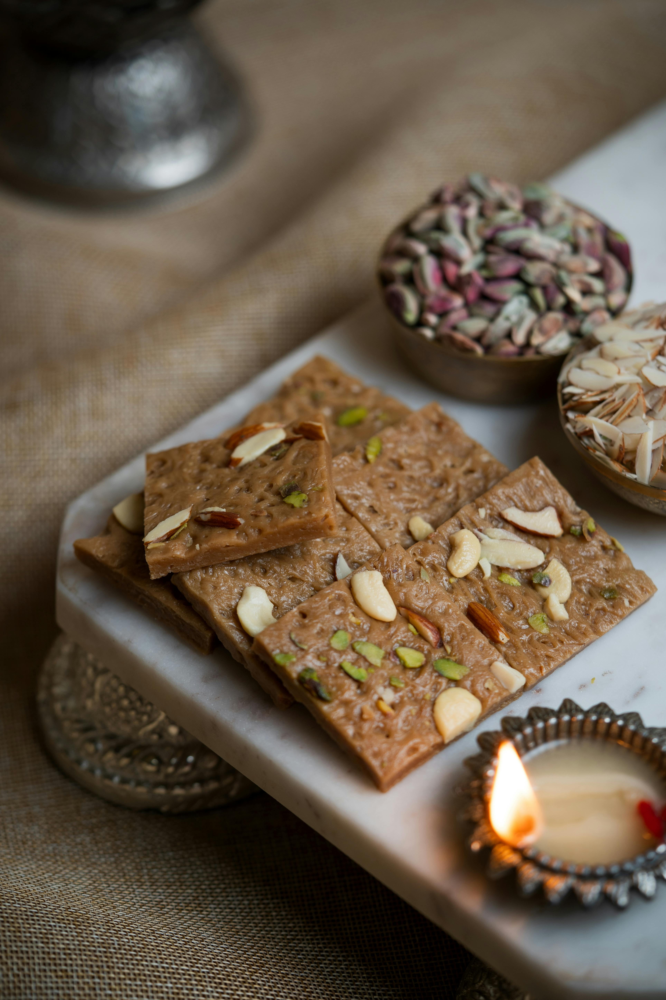

GulabJamun
Ingredients
- Sugar
- Ghee
- Maida
- DryFruits
- Water
Process
- Make sugar syrup by b7 e water and set aside.
- Mix grated khoya, 3 tbsoth dough.
- Shape dough into small, crack-free balls.
- Fry balls in mwn, then drain.
- Soak for at least 2 hours before serving.

Barfi
Ingredients
- Sugar
- Ghee
- Maida
- DryFruits
- Water
Process
- Make sugar syrup by b
- Mix grated khoya, 3 tbsp all-purpose milk gradua.
- Shape dough into small, crack-free balls.
- Fry balls in medium-hot oil unt.
- Soak fried balls in warm sugar syrup for ag.
